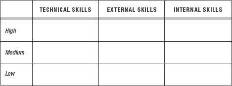

2
The Charismatic Behaviors
Presence, Power, and Warmth
CHARISMATIC BEHAVIOR CAN be broken down into three core elements: presence, power, and warmth. These elements depend both on our conscious behaviors and on factors we don’t consciously control. People pick up on messages we often don’t even realize we’re sending through small changes in our body language. In this chapter, we’ll explore how these signals can be influenced. In order to be charismatic, we need to choose mental states that make our body language, words, and behaviors flow together and express the three core elements of charisma. Since presence is the foundation for everything else, that’s where we’ll start.
Presence
Have you ever felt, in the middle of a conversation, as if only half of your mind were present while the other half was busy doing something else? Do you think the other person noticed?
If you’re not fully present in an interaction, there’s a good chance that your eyes will glaze over or that your facial reactions will be a split-second delayed. Since the human mind can read facial expressions in as little as seventeen milliseconds,1 the person you’re speaking with will likely notice even the tiniest delays in your reactions.
We may think that we can fake presence. We may think that we can fake listening. We believe that as long as we seem attentive, it’s okay to let our brains churn on other things. But we’re wrong. When we’re not fully present in an interaction, people will see it. Our body language sends a clear message that other people read and react to, at least on a subconscious level.
You’ve surely had the experience of talking to someone who wasn’t really listening. Maybe they seemed to be just “going through the motions” of listening to you so you wouldn’t be offended. Somehow, they didn’t seem to be paying full attention. How did you feel then? Brushed off? Annoyed? Just plain bad? As a student in one of my Harvard lectures told me: “It happened recently when I was talking to someone—I felt she wasn’t really present. I felt resentful, inferior to whatever was more important to her than our conversation.”
Not only can the lack of presence be visible, it can also be perceived as inauthentic, which has even worse emotional consequences. When you’re perceived as disingenuous, it’s virtually impossible to generate trust, rapport, or loyalty. And it’s impossible to be charismatic.
Presence is a learnable skill. Like any other ability (from painting to playing the piano), you can increase it with practice and patience. Being present means simply having a moment-to-moment awareness of what’s happening. It means paying attention to what’s going on rather than being caught up in your own thoughts.
Now that you know the cost of lacking presence, try the exercise on the next page to test yourself, see how present you can be, and learn three simple techniques to immediately boost your charisma in personal interactions.
Putting It into Practice: Presence
Here are a few techniques for remaining present, adapted from mindfulness disciplines. All you need is a reasonably quiet place where you can close your eyes (whether standing or sitting) for just one minute and a way to keep track of time.
Set the timer for one minute. Close your eyes and try to focus on one of the following three things: the sounds around you, your breathing, or the sensations in your toes.
- Sounds: Scan your environment for sound. As a meditation teacher told me, “Imagine that your ears are satellite dishes, passively and objectively registering sounds.”
- Your breath: Focus on your breath and the sensations it creates in your nostrils or stomach as it goes in and out. Pay attention to one breath at a time, but try to notice everything about this one breath. Imagine that your breath is someone you want to give your full attention to.
- Your toes: Focus your attention on the sensations in your toes. This forces your mind to sweep through your body, helping you to get into the physical sensations of the moment.
So how did that go? Did you find your mind constantly wandering even though you were trying your best to be present? As you’ve noticed, staying fully present isn’t always easy. There are two main reasons for this.
First, our brains are wired to pay attention to novel stimuli, whether they be sights, smells, or sounds. We’re wired to be distracted, to have our attention grabbed by any new stimulus: It could be important! It could eat us! This tendency was key to our ancestors’ survival. Imagine two tribesmen hunting through the plains, searching the horizon for signs of the antelope that could feed their family. Something flickers in the distance. The tribesman whose attention wasn’t immediately caught? He’s not our ancestor.
The second reason is that our society encourages distraction. The constant influx of stimulation we receive worsens our natural tendencies. This can eventually lead us into a state of continuous partial attention, in which we never give our full attention to any single thing. We’re always partially distracted.
So if you often find it hard to be fully present, don’t beat yourself up. This is entirely normal. Presence is hard for almost all of us. A 2,250-person study coauthored by Harvard psychologist Daniel Gilbert estimated that nearly half of the average person’s time was spent “mind wandering.”2 Even meditation masters can find their minds wandering during their practice. In fact, this is a common subject of jokes during intensive meditation retreats (yes, there are such things as meditation jokes).
The good news is that even a minor increase in your capacity for presence can have a major effect on those around you. Because so few of us are ever fully present, if you can manage even a few moments of full presence from time to time, you’ll make quite an impact.
The very next time you’re in a conversation, try to regularly check whether your mind is fully engaged or whether it is wandering elsewhere (including preparing your next sentence). Aim to bring yourself back to the present moment as often as you can by focusing on your breath or your toes for just a second, and then get back to focusing on the other person.
One of my clients, after trying this exercise for the first time, reported: “I found myself relaxing, smiling, and others suddenly noticed me and smiled back without my saying a word.”
Don’t be discouraged if you feel that you didn’t fully succeed in the one-minute exercise above. You actually did gain a charisma boost right then and there simply by practicing presence. And because you’ve already gained the mindset shift (awareness of the importance of presence and the cost of the lack of it), you’re now already ahead of the game. If you were to stop right here and read nothing further, it would be well worth it.
Here’s how this could play out for you in a practical, everyday setting. Let’s say a colleague walks into your office, wanting your opinion on some matter. You have only a few minutes to spare before your next meeting, and you’re worried that this might take more time than you have.
If you let your mind continue churning away while he’s talking to you, not only will you feel anxious and have a hard time concentrating, you’ll also give the impression that you’re restless and not fully present. Your colleague might conclude that you don’t care enough about him or his problem to really pay attention.
If instead you remember to use one of the quick fixes—focusing for just a second on your breath or your toes—this will instantly bring you back to the present moment. This full presence will show in your eyes and your face, and will be seen by the person who’s talking to you. By giving them just a few moments of full presence, they will feel respected and listened to. When you’re fully present, it shows in your body language in a highly charisma-enhancing way.
Being charismatic does not depend on how much time you have but on how fully present you are in each interaction. The ability to be fully present makes you stand out from the crowd; it makes you memorable. When you’re fully present, even a five-minute conversation can create a “wow” effect, as well as an emotional connection. The people you’re with feel that they have your full attention and that they are the most important thing in the world to you at that moment.
One client told me that he frequently upset people when he was under pressure or dealing with multiple requests. If someone came to see him, while they talked his mind would wander back to whatever he had been working on, and as a result that person felt brushed off and unimportant.
After putting some of these focus exercises to work, he reported, “I learned how valuable it was to give them my full attention even for just a few moments, and the techniques helped me stay present in that moment. As a result, people left my office feeling cared for, special.” This, he told me, was one of the most valuable lessons he’d learned from all our work together.
Increasing your ability to be present not only improves your body language, listening skills, and mental focus, it could even enhance your ability to enjoy life. Too often when a special moment arrives, such as a celebration or even a few minutes of quality time with a loved one, our mind is running in six different directions.
Meditation teacher Tara Brach has made the practice of being present a lifetime study. Here’s how she puts it: “In most moments we have a continuous internal commentary on what is happening and what we should do next. We might greet a friend with a hug, but the warmth of our greeting becomes blurred by our computations about how long to embrace or what we’re going to say when we’re done. We rush through the motions, not fully present.” Being present enables you to fully notice and drink in the good moments.
You’ve just gained three instant fixes to use during interactions, and through practice, they can become second nature. Remember that every time you bring yourself back to full presence, you reap major rewards: you become more impactful, more memorable, and come across as more grounded. You’re laying the foundation for a charismatic presence.
Now that you know what presence is, why it matters to charisma, and how to get it, let’s look at the other two crucial charisma qualities: power and warmth.
Power and Warmth
Being seen as powerful means being perceived as able to affect the world around us, whether through influence on or authority over others, large amounts of money, expertise, intelligence, sheer physical strength, or high social status. We look for clues of power in someone’s appearance, in others’ reaction to this person, and, most of all, in the person’s body language.
Warmth, simply put, is goodwill toward others. Warmth tells us whether or not people will want to use whatever power they have in our favor. Being seen as warm means being perceived as any of the following: benevolent, altruistic, caring, or willing to impact our world in a positive way. Warmth is assessed almost entirely through body language and behavior; it’s evaluated more directly than power.
How do we gauge power and warmth? Imagine that you’re meeting someone for the first time. In most instances you don’t have the benefit of an extensive background check, interviews with friends or relatives, or even the time to wait and observe their behavior. So in most instances you have to make a quick guess.
Throughout our interactions, we instinctively look for clues with which to evaluate warmth or power, and then we adjust our assumptions accordingly. Expensive clothing leads us to assume wealth, friendly body language leads us to assume good intentions, a confident posture leads us to assume the person has something to be confident about. In essence, people will tend to accept whatever you project.
Just by increasing your projection of power or your projection of warmth, you increase your level of charisma. But when you can project both power and warmth together, you really maximize your personal charisma potential.
Today, there are many ways to be perceived as powerful, from displaying intelligence (think Bill Gates) to displaying kindness (think the Dalai Lama). But in the earliest days of human history, one form of power was predominant: brute force. Yes, intelligence was valuable, but much less than it is today—it’s hard to imagine Bill Gates faring well in the jungle. Few of those who gained positions of power through raw strength and aggression would have also exhibited much warmth. The combination of power and warmth would have been very rare and very, very precious: a powerful person who also viewed us kindly could mean the difference between life and death in critical moments. Figuring out who might want to help us and who has the power to do so has always been critical to our survival.
That’s why our reaction to power and warmth is wired so deep. We react to these qualities as we do to fat and sugar. Our ancestors survived by having a strong positive reaction to fat and sugar—they aided our survival and were scarce in our original environment. Though they’re abundant today, our instinct remains. The same holds true for charisma: though the combination of warmth and power is far easier for people to attain today, it still plays powerfully on our instincts. From lab experiments to neuroimaging, research has consistently shown that they are the two dimensions we evaluate first and foremost in assessing other people.3
Both power and warmth are necessary conditions for charisma. Someone who is powerful but not warm can be impressive, but isn’t necessarily perceived as charismatic and can come across as arrogant, cold, or standoffish. Someone who possesses warmth without power can be likable, but isn’t necessarily perceived as charismatic and can come across as overeager, subservient, or desperate to please.
William Gladstone projected power during the 1886 elections. A high-status individual of strong political weight and powerful connections, known for keen intelligence and deep knowledge, he impressed his young dinner companion with his power, but lacked the warmth to make her feel special.
Disraeli was also projecting power. He, too, had a history of political power, impressive wit, and keen intelligence. But Disraeli’s genius was his ability to make whomever he was speaking with feel intelligent and fascinating. He projected presence and warmth in addition to power and was handsomely rewarded for it.
Though other approaches to charisma are possible, the combination of presence, power, and warmth is one of the most effective frameworks to help maximize your full charisma potential.
Charismatic Body Language
After extensive studies, the MIT Media Lab concluded that it could predict the outcome of negotiations, telephone sales calls, and business plan pitches with 87 percent accuracy simply by analyzing participants’ body language, without listening to a single word of content.4
Though this may sound incredible—how could words carry so little weight compared to the body language of the person delivering them?—it actually makes sense. In the scope of human evolution, language is a relatively recent invention. But we’ve been interacting well before this through nonverbal modes of communication. As a result, nonverbal communication is hardwired into our brains, much deeper than the more recent language-processing abilities. This is why nonverbal communication has a far greater impact.
For charisma, your body language matters far more than your words do. No matter how powerful your message or how skillfully crafted your pitch, if your body language is wrong, you won’t be charismatic. On the other hand, with the right body language you can be charismatic without saying a word. Projecting presence, power, and warmth through your body language is often all you need to be perceived as charismatic.
Charisma Begins in the Mind
While you were reading the last paragraph, were you aware that your eyelids were regularly fluttering in front of your eyes?
No? Yet they were blinking at precise intervals.
Did you notice the weight of your tongue in your mouth?
Or the position of your toes?
Have you forgotten your eyelids again?
Without our realizing it, our bodies send out thousands of signals every minute. Just like our breath and heartbeat, these signals are part of the millions of bodily functions controlled not by our conscious mind but by our subconscious mind. There is far too much body language for us to control consciously.
This has two consequences. First, because we can’t consciously control all of our body language, we can’t just broadcast charismatic body language at will. To get all the signals right, we’d need to simultaneously control thousands of elements, from minute vocal fluctuations to the precise degree and kind of tension around our eyes. It’s practically impossible. We can’t micromanage charismatic body language. On the other hand, since our subconscious is responsible for most of our nonverbal signals, if we could direct our subconscious appropriately, then the issue would be solved. (Hint: we can, and you’ll learn how.)
The second consequence is that our body language expresses our mental state whether we like it or not. Our facial expressions, voice, posture, and all the other components of body language reflect our mental and emotional condition every second. Because we don’t control this flow consciously, whatever is in our head will show up in our body language.
Even if we control the main expression on our face or the way we hold our arms, legs, or head, if our internal state is different from what we’re aiming to portray, sooner or later what’s called a microexpression will flash across our face. These split-second microexpressions may be fleeting, but they will be caught by observers (remember, people can read your face in as little as seventeen milliseconds). And if there’s an incongruence between our main expression and that microexpression, people will feel it on a subconscious level: their gut will tell them something’s not quite right.*
Have you ever sensed the difference between a real smile and a fake one? There is a clear, visible difference between a social smile and a true smile. A true smile brings into play two groups of facial muscles—one lifts the corners of the mouth and the other affects the area around the eyes. In a genuine smile, while the outer corners of the mouth lift, the inner corners of the eyebrows soften and fall down. In a fake smile, only the mouth-corner muscle (the zygomatic major) is used. The smile does not reach the eyes, or at least not in the same way a real smile would,6 and people can spot the difference.
Because what’s in your mind shows up in your body and because people will catch even the briefest microexpression, to be effective, charismatic behaviors must originate in your mind.
If your internal state is anticharismatic, no amount of effort and willpower can make up for it. Sooner or later, some of your underlying thoughts and feelings will show through. On the other hand, if your internal state is charismatic, then the right body language will flow forth effortlessly. Thus, the first step in learning charisma—and what the first part of this book is all about—is developing the various mental states that produce charismatic body language and behaviors.
We will start by gaining some insight into charismatic mental states—what they are, how to best access them, and how to fully integrate them so they become effortless. Only afterward will we start practicing external charismatic behaviors. Learning these skills in the reverse order could lead to embarrassing results. Imagine that you’re giving an important presentation. You’re doing well, using all the great new tools you’ve learned, being incredibly charismatic. And then suddenly, someone says something that rattles your mental focus and shakes your emotional confidence. You become flustered, and all your newly acquired skills fly out the window.
Striving to acquire external charisma skills without learning how to handle your internal world is like adding pretty balconies to a house with a weak foundation. It’s a nice touch, but at the first earthquake everything falls apart. If your internal state is in turmoil, it’s hard to remember, let alone use, the new skills you’ve just learned. Charismatic internal skills, which help you manage your internal state, form the necessary foundation upon which to build your charismatic external skills.
When companies hire me to help them improve performance—to help their executives become more persuasive, more influential, more inspiring—they often tell me that their people possess solid technical skills. Technical skills are raw brainpower, what we use to understand the instructions for assembling furniture. What these executives are lacking, I’m told, are social skills—and so people arrive expecting surface lessons in social graces and business etiquette.
But what these executives need first and foremost are personal, internal skills. Individuals with strong internal skills are aware of what exactly is happening inside them and know how to handle it. They can recognize when their self-confidence has taken a hit and have the tools to get back to a confident state so that their body language remains charismatic.
Here’s a self-rating diagram I often draw for the people I coach, from young associates to CEOs, asking them to evaluate themselves and their subordinates. Take a moment to rate your technical, external, and internal skills in the table below.

I often see brilliant engineers described by others, and by themselves, as possessing high technical, medium external, and low internal skills. CEOs tend to self-report medium technical and internal skills but high external skills. And highly charismatic people often rate themselves low in technical skills but high in external and internal skills.
While charismatic people may report fewer technical skills than their peers, their internal and external skills give them a far greater advantage overall. The internal skills necessary for charisma include both the awareness of your internal state and the tools to effectively manage it. Chinese philosopher Lao Tzu reportedly said: “To know others is knowledge. To know oneself is wisdom.”
What Your Mind Believes, Your Body Manifests
Knowing your internal world starts with one key insight upon which all charisma is built: your mind can’t tell fact from fiction. This is the one dimension of your internal world that can help you get into the right charismatic mental state at will, and almost instantly.
Have you ever felt your heart pounding during a horror movie? Consciously, you know it’s just a movie. You realize you are watching actors who are delighted to pretend they’re being murdered in exchange for a nice paycheck. Yet your brain sees blood and guts on the screen, so it sends you straight into fight-or-flight mode, releasing adrenaline into your system. Here’s how it works in practice:
Think of your favorite piece of music.
Now imagine dragging your fingernails across a chalkboard.
Now imagine plunging your hand into a bucket of sand and feeling the grains crunch between your fingers.
And now taste the difference between lemon and lime—which is more sour?
There was no sand; there was no lemon. And yet, in response to a set of completely imaginary events, your mind produced very real physical reactions. Because your brain cannot distinguish imagination from reality, imaginary situations cause your brain to send your body the same commands as it would for a real situation. Whatever your mind believes, your body will manifest. Just by getting into a charismatic mental state, your body will manifest a charismatic body language.
In medicine, the mind’s powerfully positive effect on the body is known as the placebo effect. A placebo is a simulated medical procedure: patients given “pretend” pills are told they’re receiving real ones; or people are told they’ve received a medical intervention when in fact nothing has been done. In a surprising number of cases, patients given these inert treatments still experience a real improvement in their medical condition.
The placebo effect was discovered during World War I when medicine stores had run out and doctors found they could sometimes still ease their patients’ suffering by telling them that they had administered pain-relieving treatments. It became widely acknowledged during the 1950s as the medical community began running controlled clinical studies. Through much of human history, most of medicine was in fact pure placebo: doctors would prescribe potions or interventions that we now know to be fundamentally ineffective. Yet people’s conditions still often improved, thanks to the mind’s impressive ability to affect the body.
The placebo effect can sometimes be remarkably powerful. Ellen Langer, a Harvard University professor of psychology, gathered a group of elderly patients in a nursing-home-like environment and surrounded them with the decor, clothing, food, and music that was popular when they were in their twenties. In the following weeks, physical exams showed tighter skin, better eyesight, increased muscle strength, and even higher bone density than before.
The placebo effect is the basis for many of the best charisma-enhancing techniques, and we’ll refer to it often throughout the book. In fact, this is probably something you already do naturally, and many of the practices will make intuitive sense to you. In the following chapters, we’ll fine-tune this skill and make more powerful the internal processes you already use.
The mind-over-body effect also has a corresponding downside, called the nocebo effect.7 In this case, the mind creates toxic consequences in the body in reaction to completely fictional causes. In one experiment, people who knew they were extremely allergic to poison ivy were rubbed with a completely harmless leaf but told they’d been exposed to poison ivy. Every single one of them developed a rash where they had been rubbed.
Both the placebo effect and the nocebo effect play a critical role in our ability to unleash our full charisma potential. Due to the fact that whatever is in our mind affects our body, and because our mind has trouble distinguishing imagination from reality, whatever we imagine can have an impact on our body language and, thus, on our levels of charisma. Our imagination can dramatically enhance or inhibit our charisma, depending on its content.
You’ve just gained the foundation for many of the most powerful internal charisma tools, and we’ll refer to it often.
KEY TAKEAWAYS
Charisma has three essential components: presence, power, and warmth.
* In fact, Stanford researchers conducted experiments showing that when people try to hide their real feelings, they provoke a threat-response arousal in others.5